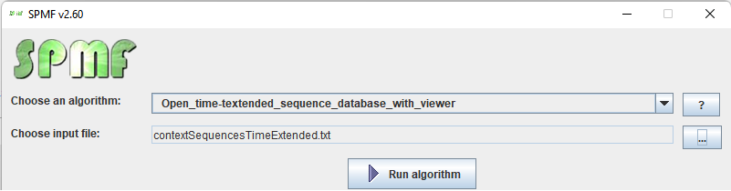
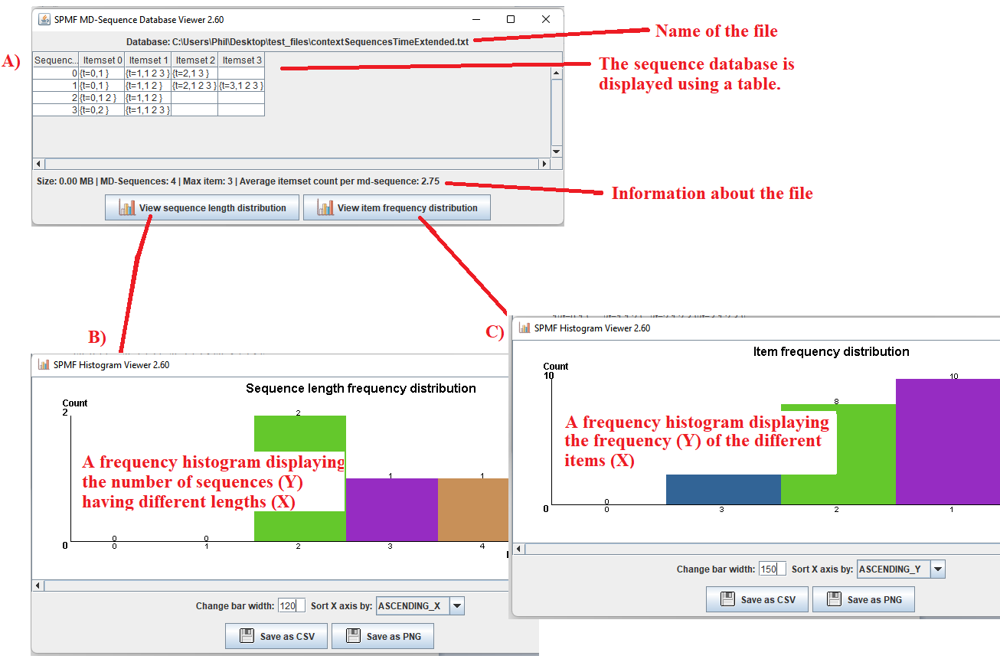

View a time-extended sequence database file with the Sequence Database Viewer (SPMF documentation)
Tim-extended sequence databases are a type of data taken as input by many data mining algorithms offered in SPMF such as the Hirate & Yamana algorithm.
A time-extended sequence database is a set of sequences that contain timestamps.
SPMF offers a tool to view the content of a time-extended sequence database. This tool is called the SPMF Sequence Database Viewer.
This page explains how to use this tool with an example.
How to run this example?
If you want to run this example from the graphical interface of SPMF, (1) choose the algorithm "Open_time-textended_sequence_database_with_viewer", (2) choose the contextSequencesTimeExtended.txt file as input, and then (3) click "run algorithm" .

- If you want to run this example from the source code of SPMF, run the file MainTestTimeSequenceDatabaseViewer, which is located in the package ca.pfv.spmf.tests
- If you want to execute this example from the command line interface of SPMF, then execute this command:
java -jar spmf.jar run Open_time-textended_sequence_database_with_viewer contextSequencesTimeExtended.txt
in a folder containing spmf.jar and the file contextSequencesTimeExtended.txt which is included with SPMF.
What is displayed?
After running the example, the content of the file will be displayed by the tool. The picture below shows the user interface of this viewer.
The window A) show in the picture below is the main window. It displays the sequence database using a table. The table has four rows in this example. Each row is a sequence from the sequence database.
Take the first row as example.
The cell in the first column of the first row indicates that the ID of this sequence is 0.
The cell in the second column indicates that the first itemset of that sequence was observed at time 0 and contains the item 1.
The cell in the third column indicates that the second itemset of that sequence was observed at time 1 and contains the items 1, 2 and 3
The fourth cell in that row indicates that the third itemset was observed at time 2 and contains the items 1 and 3.
The other sequences follow the same format.
This view as a table can be useful to understand the content of a sequence database file.
Besides, there are buttons that provides additional features:
- By clicking on the button "View sequence length distribution ", a new window is opened, presented as window B) in the picture below. This window displays the frequency histogram of the different sequence lengths in the current file. The number of sequences is the Y axis and the different sequence lengths are the X axis. There are some buttons in this window to export the data from the frequency histogram as a CSV file so that it can be imported in other software (e.g. Excel), or as a picture. Besides some options are provided to adjust the bar width and the order in which the X axis is sorted.
- By clicking on the button "View item frequency distribution ", a new window is opened, presented as window C) in the picture below. This window displays the frequency histogram for the frequency of the different items in the current file. The number of occurrences (or support) is the Y axis and the different items are displayed on the X axis. There are some buttons in this window to export the data from the frequency histogram as a CSV file so that it can be imported in other software (e.g. Excel), or as a picture. Besides some options are provided to adjust the bar width and the order in which the X axis is sorted.

What is the input?
The algorithm takes as input a time-extended sequence database, which is a text file .
The database used in this example is provided in the text file "contextSequencesTimeExtended.txt" in the package ca.pfv.spmf.tests of the SPMF distribution.
The input file format is defined as follows. It is a text file where each line represents a time-extended sequence from a sequence database. Each line is a list of itemsets, where each itemset has a timestamp represented by a positive integer and each item is represented by a positive integer. Each itemset is first represented by it timestamp between the "<" and "> symbol. Then, the items of the itemset appear separated by single spaces. Finally, the end of an itemset is indicated by "-1". After all the itemsets, the end of a sequence (line) is indicated by the symbol "-2". Note that it is assumed that items are sorted according to a total order in each itemset and that no item appears twice in the same itemset.
For example, the input file "contextSequencesTimeExtended.txt" contains four sequences.
@FILETYPE="Sequence database with timestamps"
@SOURCE="SPMF SOFTWARE https://philippe-fournier-viger.com/spmf/"
<0> 1 -1 <1> 1 2 3 -1 <2> 1 3 -1 -2
<0> 1 -1 <1> 1 2 -1 <2> 1 2 3 -1 <3> 1 2 3 -1 -2
<0> 1 2 -1 <1> 1 2 -1 -2
<0> 2 -1 <1> 1 2 3 -1 -2
The first two lines of the file indicate the file type and the source of the data. Then, the following lines contain the four sequences.
Consider the first line of data. It indicates that at time "0" the itemset
{1} appeared, followed by the itemset {1, 2, 3} at time 1, then
followed by the itemset {1, 3} at time 2. Note that timestamps do not
need to be consecutive integers. But they should increase for each
succesive itemset within a sequence. The second, third and fourth line
follow the same format.